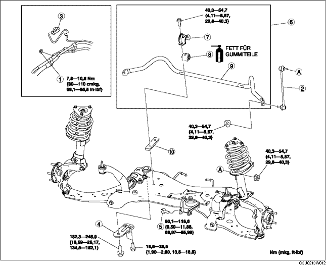

1. Die Lenksäule lösen. (Siehe LENKRAD UND LENKSÄULE AUSBAUEN/EINBAUEN.)
2. Gemäß der Reihenfolge in der Tabelle ausbauen.
3. Der Einbau erfolgt in umgekehrter Reihenfolge.
4. Die Achsgeometrie prüfen und ggf. einstellen. (Siehe VORDERACHSGEOMETRIE.)

.
|
1
|
Halterung der Servolenkungsleitung
|
|
2
|
Stabilisatorverbindungsgelenk
|
|
3
|
Steckverbinder (für Fahrzeuge mit elektrisch-hydraulischer Servolenkung)
|
|
4
|
Vorderachsfahrschemelhalterung
|
|
5
|
Zentrierschraube, Motorlager Nr. 1
|
|
6
|
Vorderachsstabilisator
|
|
7
|
Stabilisatorhalterung
|
|
8
|
Stabilisatorbuchse
(Siehe Einbauhinweis für Stabilisatorbuchse.)
|
|
9
|
Vorderer Stabilisator
|
|
10
|
Stabilisatorhalterung
|
1. Vorderachsfahrschemel mit einem Wagenheber abstützen.
2. Die Vorderachsfahrschemelhalterung ausbauen.
1. Die Aufhängungen des Schalldämpfers am mittleren Auspuffrohr vom Vorderachsfahrschemel lösen.
2. Den Vorderachsfahrschemel langsam absenken ca. 90 mm {3,5 in} und den Vorderachsstabilisator entfernen.
1. Stabilisatorflanschhalterung mit Hilfe eines Schraubstocks einspannen.
2. Den Vorderachsstabilisator abmontieren.
1. Die Einbauposition der Stabilisatorbuchse prüfen.
2. Die Öffnung der Stabilisatorbuchse weiten auf 16-26 mm {0,7-1,0 in} und die Buchse am Vorderachsstabilisator, wie abgebildet, anbringen.
1. Stabilisatorbuchse mit Fett einstreichen.
2. Stabilisatorhalterung mit Hilfe eines Schraubstocks einbauen.
1. Die Schrauben in der abgebildeten Reihenfolge festziehen.